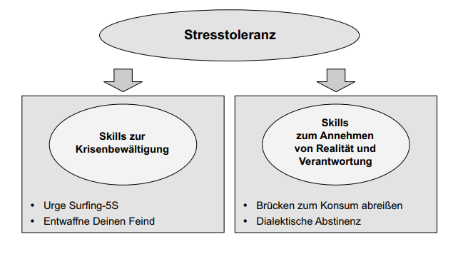
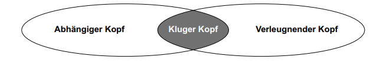
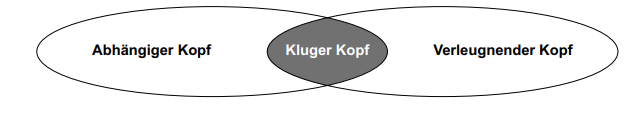
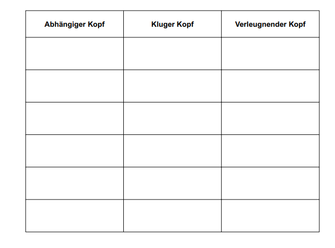
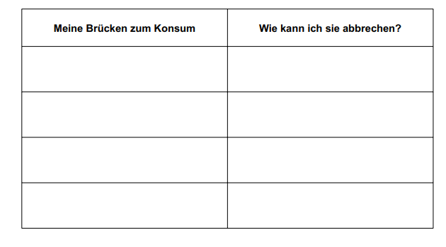
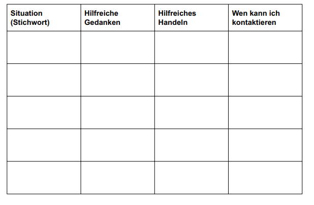

Die Skills dieses Moduls sind für Patienten mit Borderline-Persönlichkeitsstörung entwickelt worden, die gleichzeitig an einer Suchterkrankung leiden.
Die nachstehenden Info- und Arbeitsblätter beziehen sich auf folgende Fertigkeiten:

In Ergänzung zum „Infoblatt Stresstoleranz 1“ wurden für Patienten mit Suchtproblemen einige zusätzliche Skills entwickelt:
„Craving“ ist der englische Begriff für heftiges Verlangen. Diese Skills sollen Ihnen helfen, dem Drang, schädliches Verhalten einzusetzen, nicht nachzugeben, obwohl oder gerade weil dieser Drang sehr stark ist. Viele Menschen mit Alkohol- oder Drogenproblemen haben gelernt, mit Hilfe der Anti-Craving-Skills dem akuten Drang nach Drogen oder Alkohol zu widerstehen und so langfristig einen Weg aus der Abhängigkeit zu finden.
Es gibt 2 Gruppen von Skills:
Die Suchtforschung hat eindeutig gezeigt, dass das Bedürfnis nach Drogen oder Alkohol von Reizen stimuliert wird, die an die Droge erinnern: Gerüche, Bilder, Orte, die mit Drogen oder Alkohol in Verbindung stehen, Situationen oder Emotionen und insbesondere die Droge oder der Alkohol selbst. Dies nennt man „Suchtgedächtnis“. Sobald das Gehirn durch diese Reize stimuliert wird, „drängt“ sich der Wunsch nach der Droge auf.
Die oberste Regel lautet daher: Wappnen Sie sich gegen alle Reize, die mit Drogen oder Alkohol verbunden sind. Wann immer möglich, vermeiden Sie diese Reize! Die zweite Regel lautet: Wenn das akute Craving auftritt, dann nehmen Sie den Kampf dagegen auf.
Was können Sie tun, wenn Craving auftritt: „Drei mal A“
Wie das Wellenreiten genau funktioniert, entnehmen Sie bitte dem „Infoblatt Umgang mit Sucht 4“ und dem „Arbeitsblatt Umgang mit Sucht 5“ zum Urge Surfing-5S.

„Surfing“ bedeutet „Wellenreiten“ und „Urge“ steht für den Suchtdruck. „Urge Surfing“ bedeutet also Wellenreiten auf der Welle des Suchtdrucks. Einige Menschen mit Suchterkrankung können lernen, auf ihrer Welle des Suchtdrucks zu reiten wie ein Wellenreiter mit seinem Surfboard auf einer Welle in der Brandung des Meeres.
Suchtdruck und der daran gekoppelte Handlungsimpuls, den Suchtstoff zu konsumieren, ist mal stärker, mal schwächer ausgeprägt – wie eine Welle, die kommt und geht.
Der Handlungsdrang, erneut die Droge, Zigaretten oder Alkohol zu konsumieren, ist während eines bestimmten Zeitraums am höchsten, genau wie eine Welle, die in der Nähe des Ufers bricht und dann seicht an Land ausläuft. Genau in der wildesten Phase der Welle zeigt sich die Kunst des Wellenreiters. Wie beim Sport muss man auch bei der Sucht Lust und Ehrgeiz am „Urge Surfing“ entwickeln. Wie beim Sport macht man Urge Surfing nicht ohne Vorbereitung und Übung. Die Anwendung dieses Skills hilft, den Augenblick zu verändern.
Wichtige Hinweise beim Urge Surfing (Suchtdruck-Surfing):
Bearbeiten Sie dieses Arbeitsblatt, wenn Sie keinen oder nur sehr geringen Suchtdruck haben.
Wellenreiter erkennen eine kommende Welle daran, dass das Wasser sich unter ihnen zurückzieht und hinter ihnen langsam höher steigt. Sie erspüren, dass die Welle unter ihnen ist, weil sie vom Wasser hochgehoben werden. Jetzt kann das Surfen beginnen.
Einige Suchtpatienten erkennen Craving daran, dass sie „wie von Geisterhand geführt“ zunehmend an Konsum- oder Beschaffungsorte oder Personen oder Vergleichbares denken („das Wasser zieht sich zurück“). Mit einem Mal wird der Wunsch nach erneutem Suchtmittelkonsum wach („das Wasser hebt sich, die Welle ist da“). Die Gedanken und das Verhalten kreisen immer stärker und näher um den Suchtstoff. Jetzt kann das UrgeSurfing beginnen.
Diskutieren Sie: Welches sind Ihre Anzeichen für eine Welle? Gibt es mehrere? Notieren Sie diese:
Selbst Mitleid, negative Gedanken, armes Ich, ist doch alles Scheisse
_____________________________
Berichten Sie: Was sind Ihre Werte, die es Ihnen ermöglichen, der Wucht einer solchen Craving-Welle zu widerstehen? Bauen Sie sich jetzt ihr eigenes Surfboard:
Ich will LEBEN.
Ich will nie wieder irgendein Gift in meinem System haben.
Ich halte alles aus.
Ich füge mir keinen Schaden mehr zu.
Ich werde mein schwer verdientes Geld nicht der organisierten Kriminalität geben.
Ehre, Selbstwert, Selbstrespekt, Selbstliebe.
Ich will nie wieder in die Hölle.
Ich denke an danach. Was dann? Das will ich nicht haben.
Ich mache lieber einen schönen Spaziergang und spende Geld ans Kinderhilfswerk.
Ich werde es nicht wieder tun. Mir zuliebe und um der Welt zu zeigen, ich siege.
Der Alkohol und ich sind geschieden. Der Spass ist vorbei.
Was auch immer kommt, eins ist so sicher wie das Amen in der Kirche. Meine Abstinenz.
_____________________________
_____________________________
_____________________________
Merke: Die Pflege und ein sorgsamer Umgang mit den eigenen Werten macht Ihr Surfboard stabiler und fördert ihre Ausdauerkraft und Balancierfähigkeit, um während einer Welle nicht vom Brett zu fallen.
Überlegen Sie: Wie können Sie Ihre Ausdauerkraft und Balancierfähigkeit trainieren, damit Sie fit sind, wenn eine Welle kommt?
Übung, übung, übung
_____________________________
_____________________________
Spüren: Spüren Sie den Suchtdruck und akzeptieren Sie, dass er da ist.
Welche Zeichen einer Suchtdruck- (Craving-)Welle sind erfüllt?
Satz: Formulieren Sie einen starken Satz, um zu akzeptieren, dass der Suchtdruck präsent ist.
Ich akzeptiere dass ich Suchtdruck habe.
Schätzen Sie die Stärke ein und verbinden Sie sich mit Ihren Werten:Wie hoch ist der Suchtdruck jetzt in%? 60
Verbinden Sie sich jetzt mit Ihren Werten, also mit dem, was Ihnen Kraft verleiht, diese Welle zu reiten und nicht nachzugeben. Diese Verbindung verschafft ein stabiles, rutschfestes Surfboard.
Warum will ich auch diesmal nicht nachgeben?
Ich werde diesmal auch nicht nachgeben weil ich mir der negativen Konsequenzen bewusst bin.
Ich will keinen Cent mehr für diesen Dreck ausgeben.
Ich habe ein schönes Leben und will nie wieder in die Hölle. Abhängigkeit von aussen. Fremdbestimmt. Ich bestimme jetzt und bin Herr in meinem himmlischen Körper/Tempel.
Ich schade mir nie wieder, davor schade ich was externes. Wie zum Beispiel ein paar Lumpen Dealer und der Polizei vorführen.
>Suchen Sie die Welle: Das heißt, suchen Sie den Ort im Körper, wo der Druck am stärksten ist, und richten Sie Ihre Aufmerksamkeit auf darauf
Wo ist der Suchtdruck lokalisiert? Kopf.
Surfen Sie los!: Stellen Sie sich nun auf Ihre Werte (Surfboard), Stemmen Sie sich mit Ihrem bewussten Erleben und Ihren Fähigkeiten zu widerstehen (Beinarbeit) geschickt gegen den Druck der Welle (bemerken Sie, wie sie in Ihrem Körper wandert) und balancieren Sie ihn aus, bis Sie an Land sanft ausgleiten können.

Suchtdruck kann in zwei Formen hereinbrechen: plötzlich oder schleichend. Unvorbereitet kann eine solche Wucht die Abwehr lähmen und einen erneuten Suchtmittelkonsum erzwingen. Meistens gibt es jedoch Frühwarnzeichen: Spezielle Selbstgespräche oder bestimmte innere Bilder oder spezielle Gedanken – für jeden Einzelnen verschieden, aber dann fast immer die gleichen – lenken auf den Konsum von Suchtstoffen hin. Stellen Sie sich Suchtdruck als eine Kraft vor, die Ihre Gedanken, Gefühle, Körperreaktionen und Verhalten entführt und alle diese Kräfte nutzt, um Sie dazu zu bringen, erneut Suchtmittel zu konsumieren.
Ein Bild: „Suchtdruck ist wie ein Außerirdischer, der sich mit Gewalt die Herrschaft über ein menschliches Gehirn und den Körper verschafft und dessen Fähigkeiten alle für sich nutzt. Erst wenn der Außerirdische kein Interesse mehr hat, lässt er den Menschen wieder los, der dann den Schaden wieder aufräumen muss“.
Erkennen durch Benennen: Es ist hilfreich, Ihrem Suchtdruck einen Namen zu geben, so wie es die Wetterwissenschaftler z. B. mit einem Sturmtiefdruckgebiet tun. Durch das Benennen der eigenen inneren Bilder, der Selbstgespräche und der Gedanken identifizieren Sie den Suchtdruck und erkennen ihn vielleicht schon von Weitem, sodass er sich nicht unerkannt und überraschend über Sie werfen und Sie entführen kann. Bitte geben Sie Ihrem Suchtdruck und den zugehörigen Frühwarnzeichen nur einen Namen – genau wie einem Menschen, den man immer damit anspricht, wenn man ihn sieht. Es sei denn, Sie haben verschiedene Typen von Suchtdruck, die sich immer auf dieselbe Weise, aber klar voneinander unterscheidbar ankündigen.
Attackieren Sie Ihren Feind gezielt: Haben Sie Ihren Suchtdruck erkannt und mit seinem Namen benannt, bündeln Sie Ihre Kräfte und bekämpfen ihn. Zerstörerische innere Bilder können z.B. mit dem Photo einer lieben Person oder eines Vorbilds oder aber mit einer wichtigen Erinnerung angegriffen werden, die Sie vor Konsum schützt. Verweigern Sie dem Feind die Gefolgschaft und wenden Sie sich von ihm ab – ohne ihn aus den Augen zu lassen. Das können Sie beispielsweise, indem Sie eine Aufgabe verrichten, die Ihre gesamte Konzentration benötigt und dem Druck nur noch wenig Raum lässt.
Erinnern Sie sich an drei oder mehr Situationen, in denen Sie vom Suchtdruck (Ihrem Feind) überrascht worden sind und sich nicht oder nur sehr schwer dagegen wehren konnten.
Situation 1: Tod eines Familienmitgliedes
Situation 2: Trennung von Partnerin
Situation 3: Grosses Ziel nicht erreicht
Entlarven: Wie erkennen Sie den Feind (Suchtdruck)? Benennen Sie innere Bilder, die in diesen Situationen zu Substanzkonsum führen sollten/führten:
Trauer. Hoffnungslosigkeit. Wut.
_____________________________
_____________________________
Benennen Sie Selbstgespräche, die in diesen Situationen zu Substanzkonsum führen sollten/führten:
Das kann doch nicht sein. Das ist ungerecht. Ich verstehe dass nicht.
Es sollte ganz anders ein.
_____________________________
Benennen Sie zerstörerische Gedanken, die in diesen Situationen zu Substanzkonsum führen sollten/führten:
Ich will nicht mehr leben. Jetzt ist alles hinüber.
_____________________________
_____________________________
Geben Sie dem Feind einen Namen, mit dem Sie ihn gut wiedererkennen können.
Name: Toddas.
Attackieren: Wie attackieren Sie (hier den Namen des Feindes eintragen) effektiv?
Ich attackiere meine zerstörerischen inneren Bilder mit:
Aus Trauer, Freude machen. Aus Hoffnungslosigkeit, Hoffnung machen. Aus Wut, Annahme machen. Bild der Freude, Hoffnung und Akzeptanz. Einen Regenbogen.
Ich attackiere meine zerstörerischen Selbstgespräche mit:
Das gehört zum Leben dazu. Angang und Ende. Geburt und Tod. Alle Ziele erreichen ist utopisch. Schliesst sich eine Tür öffent sich eine Neue. Radikale Akzeptanz. So ist das.
_____________________________
_____________________________
Ich attackiere meine zerstörerischen Gedanken mit:
Ich will Leben. Ich werde diesen Verlust verkraften. Es wird alles gut weitergehen.
_____________________________
_____________________________
Verweigern: Zählen Sie auf, wie Sie Ihrem Feind zukünftig aktiv die Gefolgschaft verweigern.
Ich werde Dir nie wieder folgen Toddas. Du bringst mir nichts mehr. Du bist voller Müll.
_____________________________
_____________________________
Fokus verändern: lassen Sie den Feind (Suchtdruck) jedoch nicht aus den Augen! Ich richte meine Aufmerksamkeit kraftvoll auf:
Programmieren: JavaScript.
„Craving“ ist der englische Begriff für „heftiges Verlangen“ nach schädlichen Substanzen oder schädlichem Verhalten wie etwa nach Drogen, Alkohol oder Glücksspiel, manchmal auch nach Selbstverletzung, Hochrisikoverhalten, Internet-Foren oder Computer-Spielen. Der erste und wichtigste Schritt, Kontrolle über dieses Verhalten zu erlangen, besteht darin, den Drang zu diesen Handlungen genau zu protokollieren.
 

Viele Suchterkrankte schwanken zwischen zwei Extremen:
Abhängiger Kopf:Es treten Gedanken und Verhaltensweisen auf, die in Richtung Rückfall führen – oft ohne dass dabei an die entsprechenden Gefahren gedacht wird:
Wichtig: Dies geschieht oft automatisch. Das heißt, das Suchtgedächtnis übernimmt die Kontrolle und es gehört Übung dazu, sich selbst auf die Schliche zu kommen.
Verleugnender Kopf: Ist man erstmal eine Zeitlang trocken oder clean, setzt bei vielen eine Art Euphorie und Selbstüberschätzung ein: Man hat es geschafft, man wird nie mehr Drogen oder Alkohol konsumieren, man braucht auch keine Vorsorgemaßnahmen treffen, eigentlich braucht man gar keine Therapie. Weil viele Menschen in solch einer Situation aus ihrem besten Wissen heraus handeln und sich die Kraft stimmig anfühlt, ist diese Situation so gefährlich. Tatsache ist, dass sich die Sucht auf diese Weise tarnt und damit Lücken schafft, durch die Strategien zur Vermeidung eines Rückfalls weniger wirksam werden. Dies ist eine Überlebensstrategie der Sucht, um weiterhin überleben zu können. Wir nennen diese Gedanken und Gefühle den „Verleugnenden Kopf“, obwohl das Verleugnen dem Betroffenen nicht bewusst sein muss. Typische Gedanken des Verleugnenden Kopfes sind: „Diesmal schaffe ich es, das weiß ich genau. Hilfe von außen brauche ich nicht.“ „Ich habe meinen Notfallplan für meine Situation auf der Arbeitsstelle geschrieben, zuhause benötige ich keinen.“
Wichtig: Diese Gedanken und Verhaltensweisen fühlen sich so kraftvoll und sicher an, als würde man es auch trotz vorheriger Schwierigkeiten nun tatsächlich ohne weitere Maßnahmen schaffen.
Kluger Kopf: Der „Kluge Kopf“ ist einerseits abstinent, weiß aber, dass er jederzeit Gefahr läuft, wieder in das abhängige Verhalten zurückzufallen. Er weiß, welche Auslöser besonders starken Suchtdruck erzeugen, und bereitet sich entsprechend vor, um die Abstinenz nicht nur zu erreichen, sondern auch aufrecht zu erhalten.
Dieses Arbeitsblatt macht Sie mit den unterschiedlichen Denk- und Verhaltensweisen des Abhängigen Kopfs, des Verleugnenden Kopfs und des Klugen Kopfs vertraut. So wird es Ihnen leichter fallen, Ihre eigenen Denk- und Verhaltensmuster im Alltag schneller einzuordnen und sich zu wappnen.
Bitte finden Sie jeweils typisches Denken und Verhalten für jeden der 3 Bereiche:
Welche Brücken? – Die Brücken zu den Orten, die mit Ihrer Sucht zusammenhängen
Wenn man sich für den neuen Weg in die Abstinenz entschieden hat, gehört es auch dazu, das Rückfallrisiko so gering wie möglich zu halten. Alte festgetretene Pfade, die mit dem Konsum zusammenhängen, sollten nicht mehr so einfach zu betreten sein.
Was kann das konkret bedeuten?
Ein Beispiel ist, die Telefonnummer vom Dealer wegzuwerfen oder aus dem Handy zu löschen. Ein weiteres Beispiel ist, bestimmte Orte zu notieren und zukünftig bewusst zu meiden.
Denken Sie darüber nach, welches Ihre Brücken zum Konsum sind und wie Sie sie abbrechen können.
Manchmal aber ist die Sucht stärker, und Sie werden trotz aller Vorsätze rückfällig. Was ist in diesem Falle zu tun?
Sie sollten vorbereitet sein –- so wie die Crew eines Flugzeuges für den unwahrscheinlichen Fall einer Notlandung auf dem Meer vorbereitet wird:
Dieses Arbeitsblatt soll ihnen helfen, eine geeignete Selbsthilfegruppe zu Ihrem Suchtstoff zu finden und regelmäßig teilzunehmen. Es ist nachgewiesen, dass der Besuch von Selbsthilfegruppen eine äußerst effektive Maßnahme zur Erhaltung oder Wiedergewinnung der Abstinenz ist.
Ansprüche und BefürchtungenBitte tragen Sie hier ein, was Ihnen bei einer Selbsthilfegruppe wichtig ist (Ansprüche). Bitte beziffern Sie Ihre genannten Stichworte und bringen Sie diese so in eine Rangfolge:
Mir ist wichtig, dass:_____________________________
_____________________________
_____________________________
Bitte tragen Sie hier mögliche Befürchtungen ein, die der Teilnahme entgegenstehen:
Ich befürchte, dass:_____________________________
_____________________________
_____________________________
Suchen Sie so viele Selbsthilfegruppen in Ihrem Umkreis heraus wie möglich. Nutzen Sie verschiedene Hilfsmittel wie Telefonbuch, Internet, Betroffene fragen, Beratungsstellen, Facheinrichtungen sowie die Auskunft von Kliniken etc. Notieren Sie die Gruppen auf dem folgenden Arbeitsblatt. Falls der Platz nicht reicht, nehmen Sie ein weiteres Blatt hinzu und heften es mit diesem Blatt zusammen. Kreuzen Sie an, welche Gruppen Sie besucht haben.
Gruppe: Name, Adresse, KontaktAnonyme Alkoholiker
Blaues Kreuz
Freundeskreis
Guttempler
Hibiduri
Kreuzbund
Narcotics Anonymous
_____________________________
_____________________________
_____________________________
_____________________________
_____________________________
Termine machen und einhaltenNutzen Sie die obige Liste. Pflegen Sie dort Termine ein, zu denen Sie die Gruppe besuchen werden. Machen Sie einen neuen Termin, wenn Sie einen Termin verpasst haben oder ein Termin ausgefallen ist. Seien Sie offen für neue Erfahrungen. Machen Sie ein Häkchen hinter jeder gelisteten Selbsthilfegruppe, die Sie besucht haben.
Richtig entscheidenEntscheiden Sie für jede Selbsthilfegruppe einzeln anhand der folgenden Kriterienliste, nachdem Sie die Gruppe besucht haben:
Der Besuch einer Selbsthilfegruppe wird schneller zur Gewohnheit, wenn Sie ihn mit etwas verbinden, das Ihnen ein positives Gefühl verschafft. Nehmen Sie einen guten Freund mit oder erstatten Sie ihm danach Bericht. Entwickeln Sie Interesse an den Personen dort, finden Sie etwas Liebenswertes an der Gruppe, werfen Sie Vorurteile über Bord und zeigen Sie offenes Interesse. Notieren Sie hier, wie sie den Besuch der Selbsthilfegruppe mit einem für Sie positiven Ereignis verknüpfen können.
_____________________________
_____________________________
_____________________________
Nachhaltig teilnehmenMachen Sie sich Hindernisse, die der Teilnahme entgegenstehen, bewusst. Notieren Sie unten mögliche Hindernisse für die regelmäßige Teilnahme an der Selbsthilfegruppe.
_____________________________
_____________________________
_____________________________
Beantworten Sie sich nun die folgende Frage:Wie können sie diese Hindernisse umgehen oder ausgleichen, sodass eine regelmäßige Teilnahme umgesetzt werden kann?
_____________________________
_____________________________